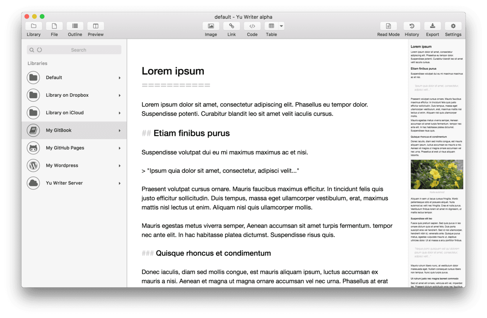
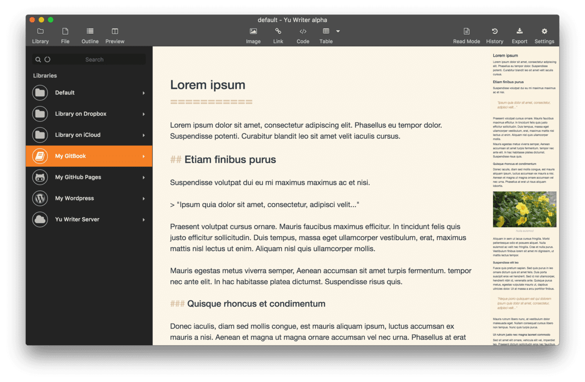
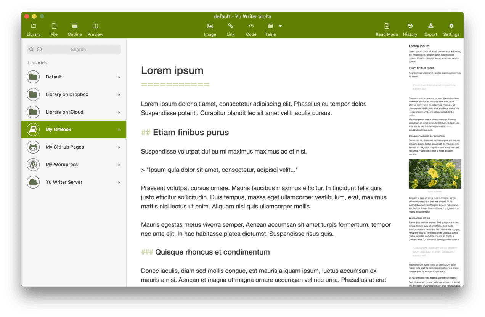
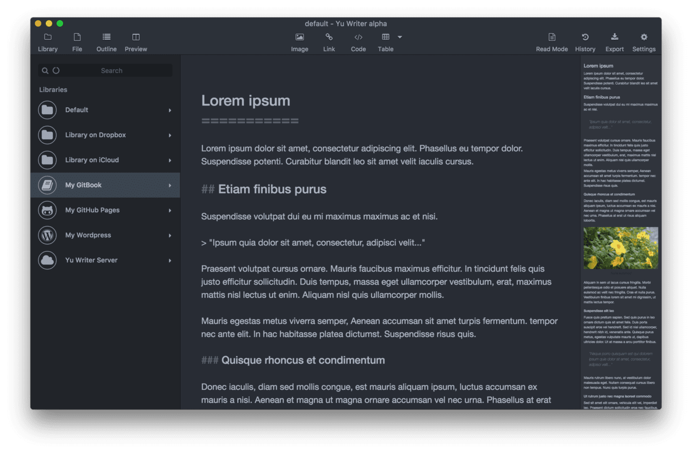
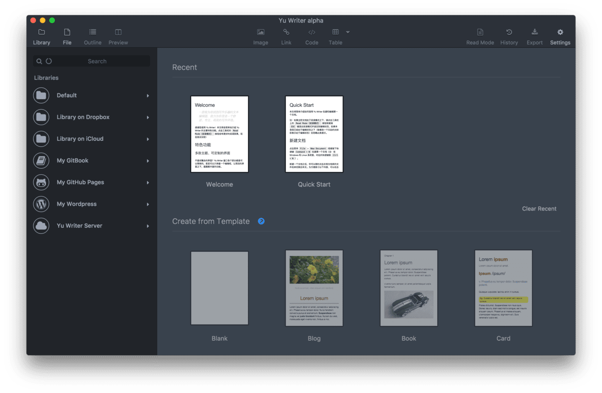
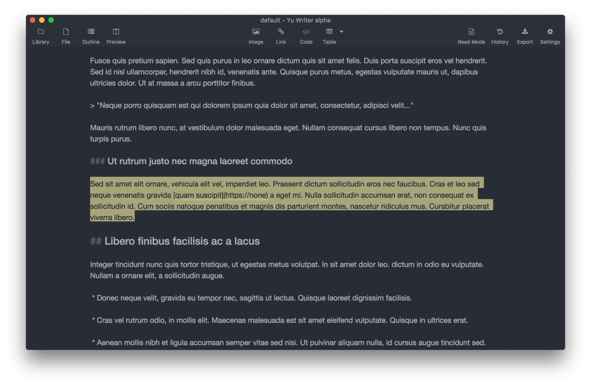
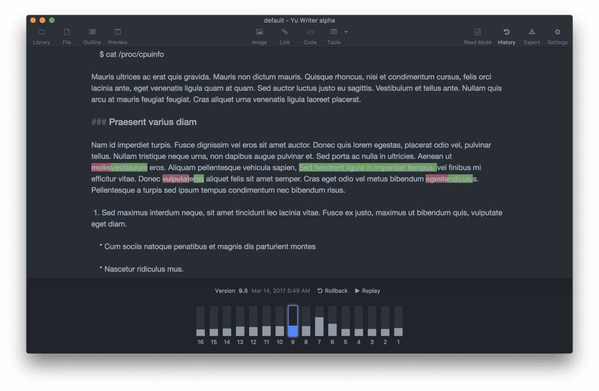
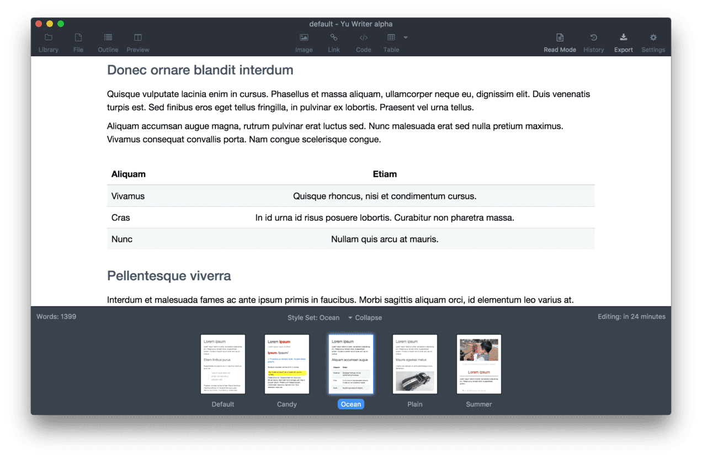
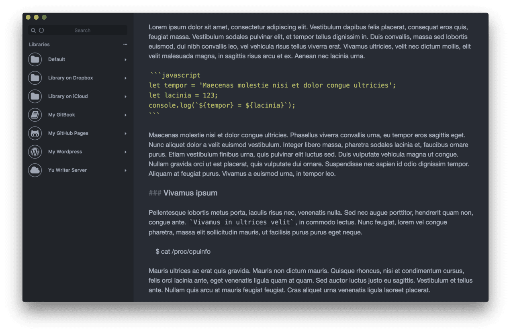

Home
Download
About
Y
⏝
Yu Writer
一款能找到写作乐趣的 Markdown 文本编辑器
致力为你营造一个舒适、专注、高效的写作环境
Download
免费下载 · Yu Writer Beta 0.4.4
支持 Linux, Mac, Windows 等平台以及 Raspberry Pi (ARM Linux)
   
简洁、可定制的界面
Yu Writer 希望你可以在一个舒适、专注的环境里创作内容，所以在界面上做到尽量的美观、简洁，你可以随时更换主题、隐藏不需要的部分，或者一键进入只有一个编辑框的专注模式。

所有文档都在一个地方
你的所有创作都在内置的文档库里，再也不用到处寻找文档。文档库支持全文搜索、支持 Tag（标签）管理。除了可以编辑文档库里的文档，也可以作为纯文本和 Markdown 文本编辑器用于编辑本地文档。

文档热保存、自动还原工作现场
你可以随时打开应用开始写作，也可以随时关闭应用，文档是热保存的，再也不会因为忘记手动保存、误操作或者程序崩溃而丢失数据。每次打开应用时还能自动打开上次编辑时的文档以及还原光标位置，方便立即进入书写状态。

日志式版本记录
文档的编辑全过程，包括每个文字的录入和删除，都会记录下来，真正可以做到回滚到历史上任意版本、任意时刻。还支持重播观看创作的全过程哦！

导出 PDF、Docx 等多种文章格式
可以把文档导出为 PDF、Docx、HTML、Text Bundle、图片等格式，还支持导出为 WordPress 或者微信公众号的文章格式。导出 PDF、Docx 和 HTML 时更有多种样式可以选择，用于将文档渲染成不同的风格。

博客、电子书、个人知识库一站解决
内置静态博客、ePUB 电子书以及个人知识库（Wiki）生成引擎，创建、编辑、发布文章都在本应用程序内轻松方便完成。同时支持管理 GitHub Pages、Jekyll、Hexo、Hugo、GitBook Toolchain 等项目。
自动转 Markdown 格式
可编辑的表格
图片资源库
自动目录
代码美化、语法加亮
自动脚注
手势操作
即时预览
更多贴心的功能
从网页复制过来的内容会自动转换为 Markdown 格式、支持多种缩放级别的即时预览等等，欢迎在使用过程中慢慢发掘和体会。